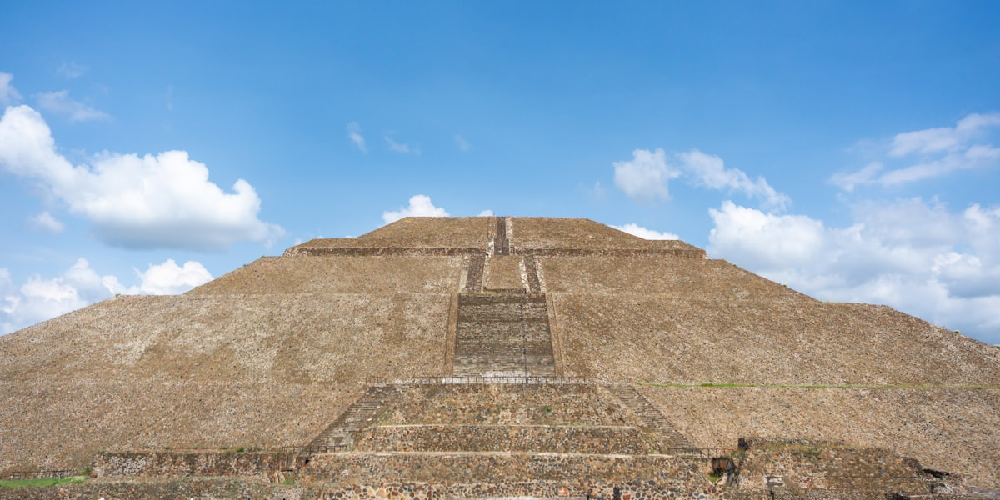
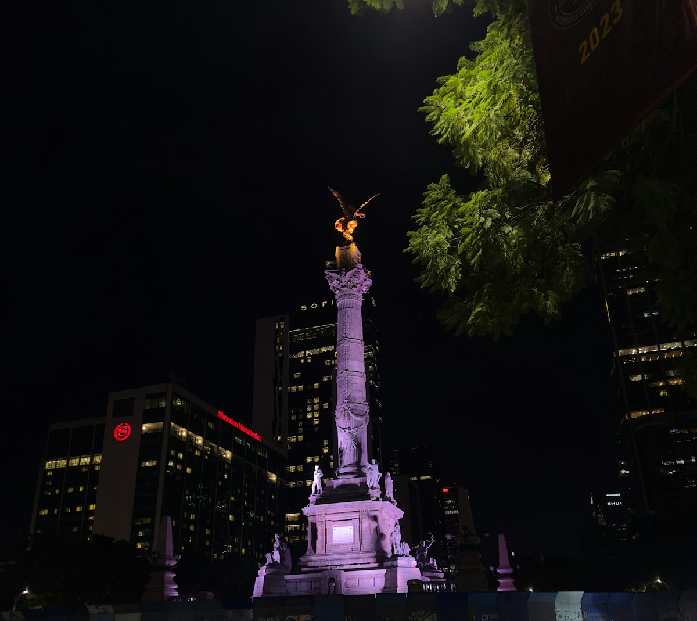
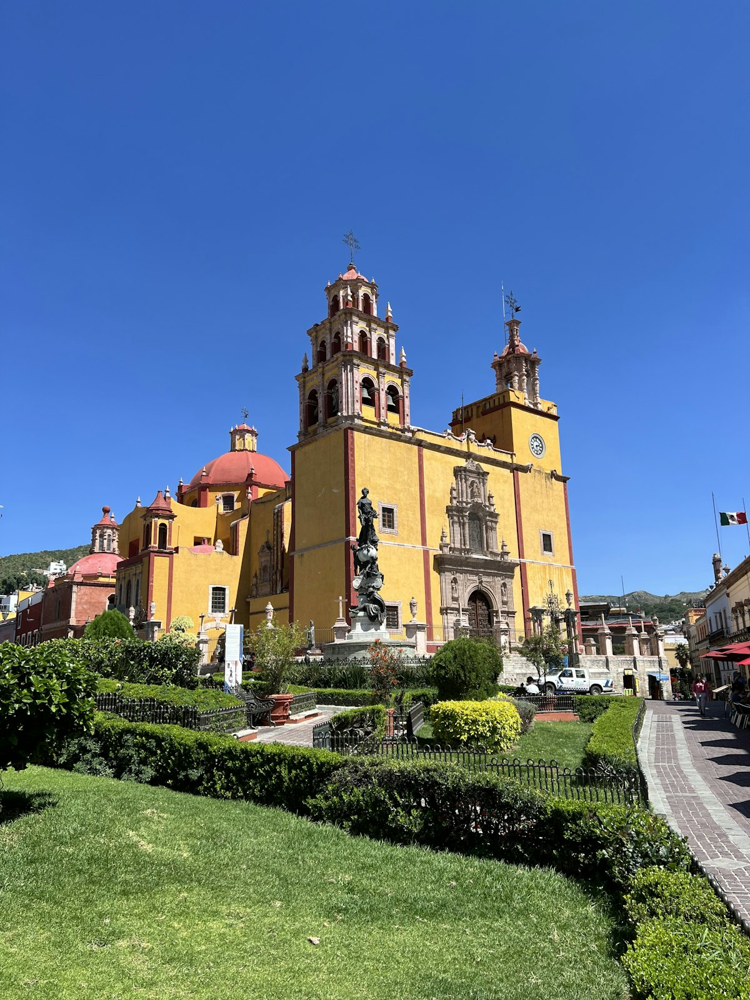
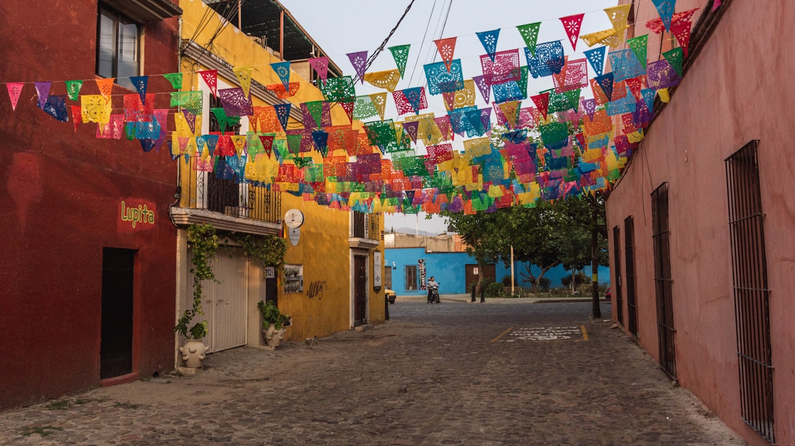
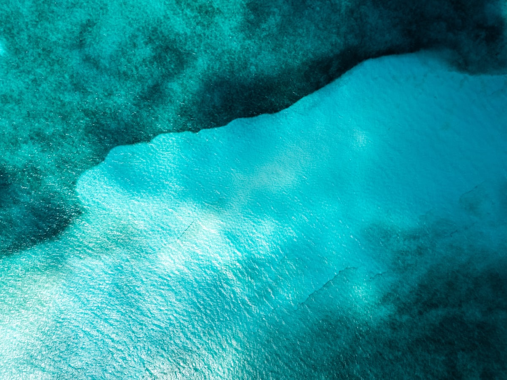
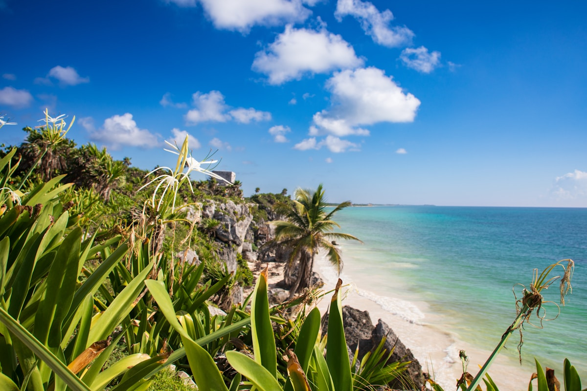
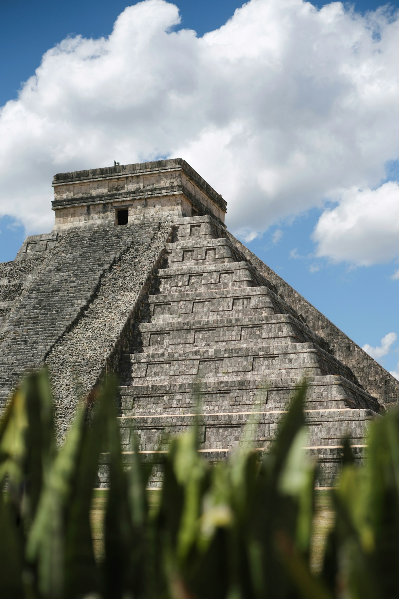
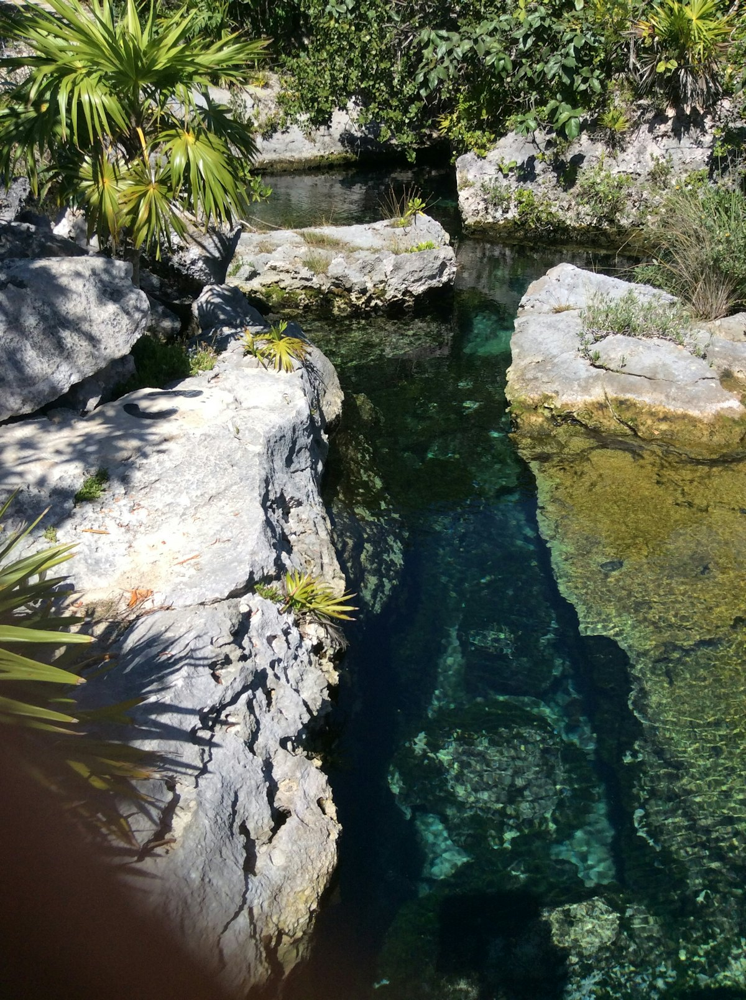

| 事项 | 结论 |
|---|---|
| 事项 | 结论 |
| 签证（最关键） | 中国护照需办墨西哥签证；持有效美国签证（B1/B2）可免签入境，最省心 |
| 推荐方案 | 中部文化线（墨城/特奥蒂瓦坎/瓜纳华托/瓦哈卡）+ 尤卡坦海岸线（坎昆/图卢姆/奇琴伊察） |
| 返程约束 | 第 14 天从坎昆返程，无直飞，需经墨西哥城/美国/东京转机，提前 1–2 个月订 |
| 行程链 | 墨西哥城 → 特奥蒂瓦坎 → 瓜纳华托 → 瓦哈卡 → 坎昆 → 图卢姆 |
| 预算（人均） | 经济 15000–25000 ／ 标准 30000–45000 ／ 舒适 60000–90000（人民币） |
| 三件提前事 | ① 确认美签免签路线 ② 订内陆航班（瓦哈卡—坎昆）③ 金字塔清晨票提前预约 |
| 季节提醒 | 11 月–次年 4 月旱季最佳；5–10 月雨季下午雷阵雨；11 月初亡灵节氛围最浓 |
| 支付 | 比索现金 + 信用卡；小餐馆/市场只收现金，机场换汇不如市区 |
以下为 14 天 13 晚的推荐节奏：先中部文化 8 天，再飞坎昆转尤卡坦海岸 6 天。金字塔与遗址都安排在上午（开门即入避开暴晒），海岸段节奏放缓。
| 日期 | 行程 | 过夜地 | 主题 |
|---|---|---|---|
| D1 抵墨西哥城 | 北京✈墨西哥城（转机全程约 15–20h），入住历史中心，晚看索卡洛广场 | 墨西哥城 | 抵达+预热 |
| D2 | 宪法广场 + 大教堂 + 国家宫壁画 → 阿兹特克大神庙 → 老城漫步 | 墨西哥城 | 历史中心 |
| D3 | 人类学博物馆 → 查普尔特佩克城堡 → 改革大道 | 墨西哥城 | 博物馆日 |
| D4 | 特奥蒂瓦坎：太阳金字塔登顶 + 月亮金字塔 + 亡灵大道 | 墨西哥城 | 金字塔日 |
| D5 | 大巴到瓜纳华托：皮皮拉山全景 + 圣母大教堂 + 接吻巷 | 瓜纳华托 | 彩色山城 |
| D6 | 木乃伊博物馆 + 彩色阶梯；晚✈瓦哈卡 | 瓦哈卡 | 山城漫游 |
| D7 | 瓦哈卡：圣多明各教堂 + 市场 + 彩色街区 | 瓦哈卡 | 瓦哈卡初探 |
| D8 | 蒙特阿尔班遗址 + 陶器村 | 瓦哈卡 | 文明遗迹 |
| D9 | ✈坎昆：酒店区白沙滩 + 日落 | 坎昆 | 加勒比海 |
| D10 | 奇琴伊察库库尔坎金字塔 + 伊克基尔天坑 | 坎昆 | 玛雅奇观 |
| D11 | 图卢姆：海边玛雅遗址 + 海滩 | 图卢姆 | 悬崖玛雅 |
| D12 | 天坑浮潜 + 图卢姆村漫步 | 图卢姆 | 天坑日 |
| D13 | 女人岛：自行车环岛 + 浮潜（自由日） | 坎昆 | 自由日 |
| D14 返程 | 坎昆✈北京（经转机），到家休息 | — | 收尾 |
以下为 14 天全程的逐小时执行时间线，可当作「当天打开照着走」的清单。标注 ※ 的可选项视体力与天气取舍。
| 时间 | 事项 |
|---|---|
| 09:00–13:00 | 北京✈墨西哥城（无直飞，多经东京/首尔/北美转机，全程约 15–20h） |
| 14:00–16:00 | 入境取行李，Uber/打车到历史中心酒店（机场距市区约 12km） |
| 16:30–18:30 | 入住后宪法广场索卡洛 Zócalo 初逛：国家宫、大教堂外观 |
| 19:00 | 晚餐：历史中心塔可小摊或市场边，早休息适应海拔 |
| 时间 | 事项 |
|---|---|
| 08:30–11:00 | 宪法广场 Zócalo（免费）：世界最大城市广场之一，墨西哥城大教堂外观 |
| 11:00–13:00 | 国家宫（免费，需护照登记）：里维拉《墨西哥历史》巨幅壁画 |
| 13:00–14:30 | 午餐：阿兹特克菜或 La Casa de Toño 连锁 |
| 15:00–17:00 | 阿兹特克大神庙 Templo Mayor（成人约 90 比索）：阿兹特克首都核心遗址 |
| 17:30–19:30 | 老城漫步（免费）：邮局宫、美术馆宫外观；晚餐：塔可 El Huequito |
| 时间 | 事项 |
|---|---|
| 09:00–12:30 | 人类学博物馆（成人约 90 比索）：阿兹特克太阳历石、玛雅展馆，拉美最顶级博物馆 |
| 12:30–14:00 | 午餐：查普尔特佩克公园附近墨西哥菜 |
| 14:30–16:30 | 查普尔特佩克城堡（成人约 90 比索）：山顶城堡俯瞰改革大道 |
| 17:00–18:30 | 改革大道 Paseo de la Reforma（免费）：独立天使纪念碑拍照 |
| 19:00 | 晚餐：Polanco 区高档墨西哥餐厅 |
| 时间 | 事项 |
|---|---|
| 08:00 | 墨西哥城乘大巴/打车到特奥蒂瓦坎（约 1h，早起避开暴晒与旅行团） |
| 09:30–11:30 | 太阳金字塔（遗址成人约 90 比索）：登顶 248 级台阶俯瞰亡灵大道 |
| 11:30–13:00 | 月亮金字塔 + 亡灵大道：从月亮广场回望全城最好拍 |
| 13:00–14:30 | 午餐：遗址出口餐厅/仙人掌塔可 |
| 14:30–16:00 | 羽蛇神庙（含票）：浮雕与配色最华丽的一座 |
| 16:30 | 返墨西哥城，晚餐休息 |
| 时间 | 事项 |
|---|---|
| 08:00 | 墨西哥城北站乘 ETN/ADO 一等大巴到瓜纳华托（约 4h） |
| 12:30–14:00 | 入住山谷酒店，午餐：瓜纳华托市场 |
| 14:30–16:30 | 皮皮拉山（缆车往返约 90 比索或徒步）：俯瞰彩色山城全景，瓜纳华托名片 |
| 16:30–18:00 | 圣母大教堂 + 联合广场（免费）：黄墙教堂与热闹广场 |
| 18:30–20:00 | 接吻巷 Callejón del Beso（免费）：爱情传说小巷，晚餐：烤肉 |
| 时间 | 事项 |
|---|---|
| 09:00–11:00 | 木乃伊博物馆（成人约 90 比索）：保存完好的自然木乃伊，猎奇但震撼 |
| 11:00–13:00 | 彩色阶梯 + 迭戈·里维拉博物馆（外观免费/门票约 60 比索）：山城最美涂鸦阶梯 |
| 13:00–14:00 | 午餐：瓜纳华托大学旁餐厅 |
| 14:30 | 返墨西哥城（大巴约 4h）或直接去机场 |
| 18:00–20:00 | 墨西哥城✈瓦哈卡（约 1h10min，廉航提前订约 300–600 元），宿瓦哈卡 |
| 时间 | 事项 |
|---|---|
| 09:00–11:00 | 圣多明各教堂（免费）：巴洛克金顶 + 相邻文化中心博物馆 |
| 11:00–13:00 | 瓦哈卡彩色街区（免费）：鹅卵石路 + 蓝黄民居，拍照绝佳 |
| 13:00–14:30 | 午餐：20 Noviembre 市场烤肉（塔可 + 烤仙人掌） |
| 14:30–16:30 | 瓦哈卡市场（免费）：梅斯卡尔酒、陶器、辣椒集市 |
| 17:00 | 晚餐：瓦哈卡七色莫雷 Mole 餐厅 |
| 时间 | 事项 |
|---|---|
| 08:30 | 瓦哈卡乘小巴/打车到蒙特阿尔班（约 30min，山顶古城） |
| 09:30–12:00 | 蒙特阿尔班遗址（成人约 90 比索）：萨波特克文明山顶都城，球场 + 观星台 |
| 12:00–13:30 | 午餐：山脚餐厅或返城 |
| 14:00–16:00 | 陶器村（免费）：黑陶与彩陶手工村（如 San Bartolo Coyotepec） |
| 17:00 | 返瓦哈卡，晚餐：市场小吃/烤肉 |
| 时间 | 事项 |
|---|---|
| 08:00 | 瓦哈卡✈坎昆（约 1.5h，廉航 Volaris/VivaAerobus 提前订约 300–800 元） |
| 11:00–13:00 | 入住坎昆酒店区（Zona Hotelera）或市区，午餐：海鲜 |
| 13:30–17:00 | 酒店区白沙滩（免费）：加勒比海果冻色海水，日光浴 + 游泳 |
| 18:00 | 晚餐：酒店区海边餐厅看日落，夜生活可选（Coco Bongo 等） |
| 时间 | 事项 |
|---|---|
| 07:00 | 坎昆乘大巴/自驾到奇琴伊察（约 2h，早到避开大团与暴晒） |
| 09:30–12:30 | 奇琴伊察库库尔坎金字塔（成人约 614 比索）：玛雅世界新七大奇迹，春秋分蛇影奇观 |
| 12:30–14:00 | 午餐：遗址门口餐厅 |
| 14:00–16:00 | 圣井天坑 Ik Kil（成人约 80 比索）：藤蔓天坑跳水游泳 |
| 17:00 | 返坎昆，晚餐：塔可/海鲜 |
| 时间 | 事项 |
|---|---|
| 08:00 | 坎昆自驾/collectivo 到图卢姆（约 1.5h） |
| 09:30–12:00 | 图卢姆玛雅遗址（成人约 90 比索）：悬崖上的玛雅城堡 + 加勒比海背景 |
| 12:00–13:30 | 午餐：图卢姆海滩餐厅（网红素食/海鲜） |
| 13:30–17:00 | 图卢姆海滩（免费）：果冻色海水浮潜 + 吊床休息 |
| 18:00 | 宿图卢姆村或返坎昆 |
| 时间 | 事项 |
|---|---|
| 09:00–11:30 | 天坑浮潜（如 Dos Ojos/Suytun，门票约 150–300 比索）：钟乳石地下水世界 |
| 11:30–13:00 | 午餐：图卢姆村塔可 |
| 13:30–15:30 | 图卢姆村漫步（免费）：精品店 + 咖啡店，网红打卡 |
| 16:00 | 返坎昆（约 1.5h），晚餐 + 打包行李 |
| 时间 | 事项 |
|---|---|
| 08:30–11:00 | 女人岛 Isla Mujeres（渡轮往返约 220 比索）：自行车环岛 + 海滩俱乐部 |
| 11:00–13:00 | 午餐：女人岛海鲜 |
| 13:30–17:00 | 女人岛沙滩/浮潜（MUSA 水下博物馆可选，约 500 比索） |
| 18:00 | 返坎昆，晚餐：告别晚餐，购物补货 |
| 时间 | 事项 |
|---|---|
| 08:00–10:00 | 自由活动 + 退房，前往坎昆机场 |
| 10:30–12:00 | 免税店扫货：龙舌兰/梅斯卡尔、玛雅手工艺品、咖啡 |
| 12:00–14:00 | 午餐：机场 |
| 14:00 | 坎昆✈北京（经墨西哥城/美国/加拿大转机，总耗时约 20–24h） |
必去（必去）/ 顺路（顺路）/ 可跳过（可跳过）。

必去
必去
必去
必去
必去
必去
顺路图片为 Unsplash 主题图（特奥蒂瓦坎金字塔、墨西哥城独立天使、瓜纳华托圣母大教堂、瓦哈卡街区、坎昆海滩、图卢姆遗址、奇琴伊察、尤卡坦天坑均为墨西哥实景）。更多免费景点：墨城宪法广场、改革大道、瓜纳华托接吻巷、瓦哈卡市场。
点击左侧节点可在地图上定位；点击地图 marker 会高亮对应节点。坐标为 WGS-84 转 GCJ-02 纠偏后标注。
以下为单人、不含购物的估算，人民币计价；出发地基准北京。汇率按 1 人民币 ≈ 2.8 墨西哥比索估算。往返机票按转机 6000–12000 元计，旺季（12–1 月、复活节）上浮 20–40%。
| 项目 | 经济（15000–25000） | 标准（30000–45000） | 舒适（60000–90000） |
|---|---|---|---|
| 往返机票 | 北京⇄墨西哥城/坎昆 6000–9000 | 含内陆段 8000–12000 | 直飞商务/灵活 15000–25000 |
| 住宿（13 晚） | 民宿/青旅 250–450/晚 | 三星/连锁 600–1200/晚 | 度假村/精品 1500–3500/晚 |
| 交通（内陆航班+巴士） | 大巴+廉航 1500–2500 | 内陆航班+巴士 2500–4000 | 包车+直飞 6000–10000 |
| 门票 | 基础遗址约 800–1500 | 含奇琴伊察等约 2000–3500 | 全含+体验 5000–8000 |
| 餐饮（14 天） | 街头小吃+市场 2500–4000 | 正常下馆子 5000–8000 | 高档餐厅/酒厂 12000–20000 |
墨城只留 2 天，重点放坎昆周边：坎昆海滩 3 天 + 奇琴伊察/伊克基尔 1 天 + 图卢姆/天坑 2 天 + 女人岛或科苏梅尔 1 天。适合海滩度假型玩家，节奏最轻松。
把时间压到墨城与瓦哈卡：亡灵节期间两地有盛大庆典（万寿菊花桥、骷髅游行、祭坛大赛），瓦哈卡氛围最地道。住宿提前 2–3 个月订，体验值拉满，但机票酒店翻倍，适合预算充足的深度玩家。
| 方式 | 时长 | 参考价 | 备注 |
|---|---|---|---|
| 直飞（经转） | 北京→墨西哥城约 15–20h | 往返 6000–12000 元 | 多经东京/首尔/洛杉矶/多伦多转机 |
| 转机 | 18–24h | 5000–9000 元 | 留意航站楼衔接与过境签证 |
| 境内航班 | 墨城—坎昆 2.5h、瓦哈卡—坎昆 1.5h | 单程 300–800 元 | Volaris/VivaAerobus 廉航提前订 |
| 区域 | 价格/晚 | 优点 | 短板 |
|---|---|---|---|
| 墨西哥城·历史中心/改革大道 | 经济 200–400 / 标准 500–900 | 景点步行可达 | 老城夜晚人流复杂 |
| 瓜纳华托·联合广场周边 | 经济 250–450 / 标准 600–1100 | 彩色山城核心 | 石板路拖行李难 |
| 瓦哈卡·市中心 | 经济 200–400 / 标准 500–900 | 市场教堂步行 | 周末人多 |
| 坎昆·酒店区/市区 | 经济 300–500 / 标准 800–1800 | 白沙滩度假感 | 酒店区价格翻倍 |
| 图卢姆·海滩/村 | 生态小屋 500–1200 / 度假村 2000+ | 网红风格，海滩近 | 部分民宿停电 |
| 省钱建议 | 墨城/瓦哈卡民宿普遍 300–600 元含早 | 性价比高于酒店 | 需提前订（亡灵节爆满） |